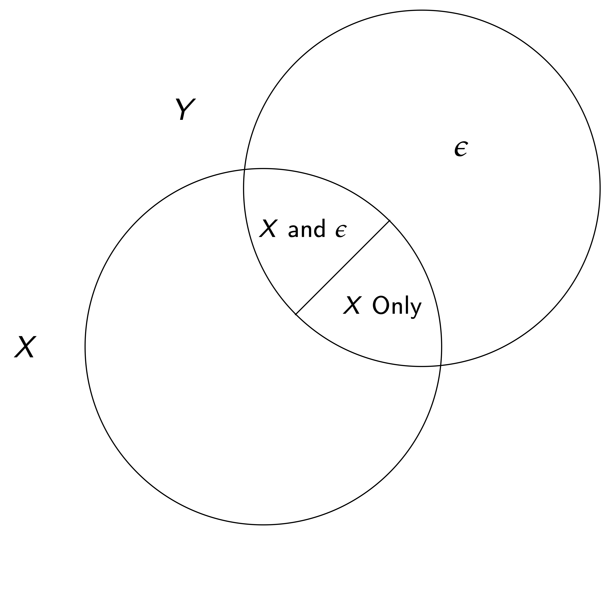
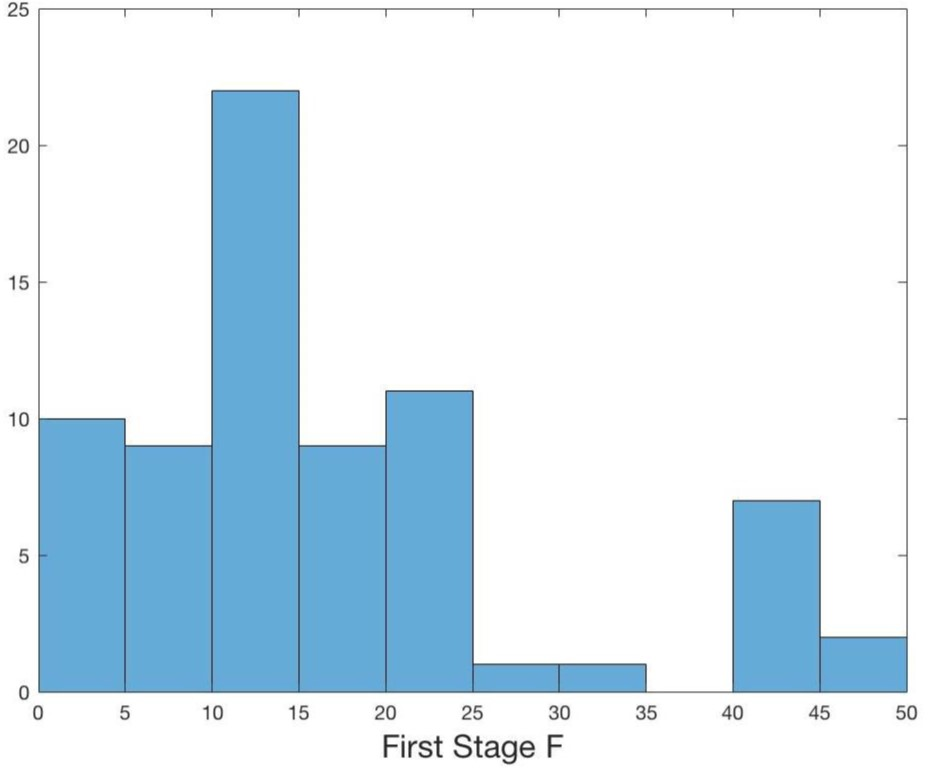
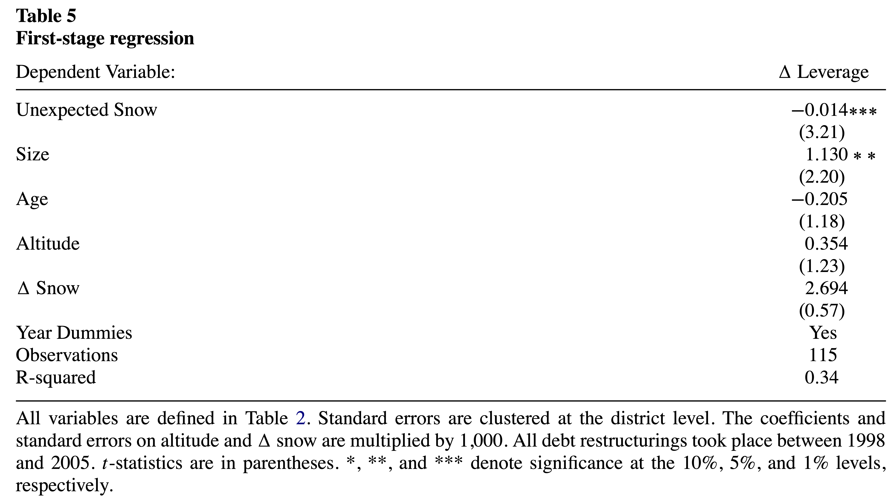
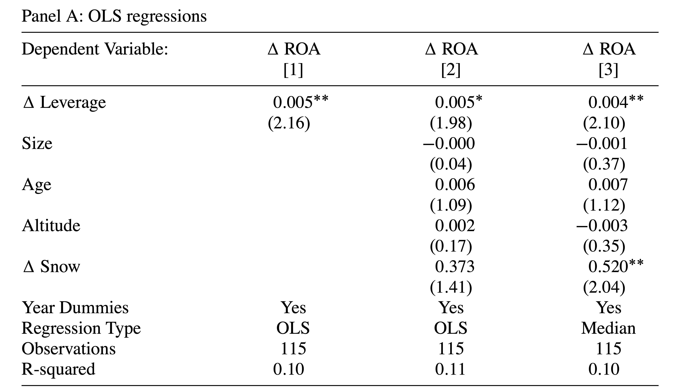

MATH60207: Lecture 9
Adapted from slides by Pat Akey (University of Toronto & INSEAD)
Outline
IV
- Instrumental Variables
- Potential Errors
- IV Example
- IV in Python
Ethics in Statistical Research
Introduction to IV
y = x\beta + \tilde{X}\beta_{\tilde{X}} + \varepsilon \quad \text{where} \quad E[\varepsilon|x] \neq 0 \\ \Rightarrow \widehat{\beta}_{OLS} \overset{p}{\rightarrow} \beta + \frac{Cov[x,\varepsilon]}{Var[x]} \ne \beta \quad \text{when} \quad T \rightarrow \infty
In other words, if one component X is not orthogonal to \varepsilon, \widehat{\beta}_{OLS} is biased (note that here we care about \beta, the univariate coefficient on x, not the vector of all coefs.).
- Assume that we can find some other (instrumental) variable that satisfies
x = \gamma z + \tilde{X}\gamma_{\tilde{X}} + \mu \quad \text{where} \quad Cov[z,\varepsilon] = 0, \gamma \ne 0
We can isolate variation in the determination of x through z that is unrelated to the main relationship we are studying (the effect of x on y).
Introduction to IV
- We need two assumptions for a valid IV
- Relevance — There must be correlation between z and x conditional on all other variables in a system i.e. \gamma \ne 0
- Exclusion — The variable can be excluded from the main equation of interest.
Two important parts to this assumption:
- The only relationship between z and y is through the first stage relationship
- Conditional on covariates (\tilde{X}), the instrument is as good as randomly assigned
IV Variation

IV Variation

IV Variation

How does this work?
- Typically done as a two stage OLS estimation
- Estimate the relationship between z and x (including all other variables in the main equation)
- Estimate \hat{x} using the estimated coefficients
- Estimate the second stage model with \hat{x}
Can also be done as a GMM system
\widehat{\beta}_{2SLS} \overset{p}{\rightarrow} \frac{Cov[z,y]}{Cov[z,x]} = \beta + \frac{Cov[\epsilon,z]}{Cov[x,z]} \quad \text{when} \quad T \rightarrow \infty
- Note that the identifying assumptions imply that the IV coefficient is asymptotically consistent
- The estimator is biased in finite samples, but more on this later
Where do good instruments come from?
- IV originally developed as a technique to estimate systems of equations (e.g. supply and demand for oranges)
- Using rainfall to instrument supply in order to isolate perturbations in quantity and price along a demand curve
Good instruments have credible economic link for relevance, and a logical reason for exclusion
- Relevance can be tested since it is a partial correlation
- Exclusion cannot be tested, so it must be argued based off of logical reasoning
Common (good) instruments include physical events, institutional changes, etc.
Common bad instruments include lagged variables and group averages excluding an individual member
More on the Exclusion Restriction
- The exclusion assumption cannot be tested
- We never observe the true errors of a model, so we cannot test whether they are correlated with our instrument
- Moreover, the estimated residuals will always be orthogonal to all covariates in a regression, so we cannot “test” whether a potentially endogenous variable is correlated with the error of a regression
Researchers need to come up with supporting evidence that the exclusion restriction might hold
Placebo tests can be helpful
- Maybe there is a region or time period when we think an effect shouldn’t be present
- Are there other outcomes where confounding stories would have implications that can be tested?
More on IV
- IV is consistent, but biased in finite samples towards the OLS estimate
- Basically because the first stage is estimated (with noise) there is bias unless the sample is really large
Since (asymptotically) \widehat{\beta}_{2SLS} = \beta + \frac{Cov[\epsilon,z]}{Cov[x,z]}, in finite samples, we are dividing the potential bias by the strength of the instrument, so it is really important to have a strong instrument
- Adding more weak instruments makes the problem worse
Several papers suggest having a first-stage F-statistic on the instrument of greater than 10 or so.
- Best practices are evolving
Inference with weak (but valid) instruments
- Imposing filters (like an F-statistic cutoff) can induce distortions in which specifications/magnitudes are reported
- Weak instruments are only a problem when there is a violation of the exclusion restriction — filters will rule out cases of good instruments that have low power — would otherwise identify useful causal magnitudes
- Like p-value cutoffs

Over-Identification
- Consider only one endogenous variable in an equation. If there are more than one instruments for the variable, it is over-identified. In this case there is a “test” to show whether one instrument versus another instrument provides different estimates
- BUT they could all be bad instruments…
IV example — Snow and Leverage
- Giroud et al. (2012) (GMSW) study whether reducing debt overhang increases firm performance
- Important question, but tough to find exogenous variation in debt forgiveness
The authors look at “unexpected” changes in snow on Austrian ski resorts
- Look within the set of firms that had a debt restructuring to try and identify those that were strategic defaulters — i.e. those firms that defaulted despite having “favorable” circumstances
Economic story — those firms that had renegotiated and had unexpected good snow likely underinvested or were lazy, whereas those that had bad snow were more likely liquidity defaulters
- Possible if lenders cannot ex-ante credibly commit to ex-post inefficient liquidation
- Obvious alternative story is that managers who default despite good snow are bad managers. Authors attempt to address this.
GMSW IV story
- Note that their story is not about the amount or level of snow, but the unexpected snow
Economic setting argues relevance
- Exclusion restriction ((1) that conditional on covariates the variation is random and (2) that strategic debt relief is the only channel at work) relies on a few points
- Primary analysis is on restructuring firms — so this looks within the set of restructuring firms and isolates variation in how the debt was restructured, so alternate stories have to explain variation within these firms
- Authors control for the amount of snow (and this loads in the expected direction), so alternative explanations cannot be about the amount of snow
- The authors first start with OLS regressions — they find that an increase in leverage is correlated with an increase in ROA
- Next instrument change in leverage by abnormally high or low snowfall in recent years
- Finally show the second stage results
IV estimation

- Coefficient is negative — consistent with economic justification of instrument
- Correlation is strong — F-Stat of \beta=0 is 10.3 — Important to ensure relevance condition is met
OLS

IV Second Stage

- IV results flip sign compared to OLS results, suggesting that IV approach was important
- Authors interpret their findings as restructuring caused by strategic defaults leads to better ROA because managers/shareholders are better incentivized
More on the Exclusion Restriction and bias
- We said before that exclusion assumption cannot be tested
- We never observe the true errors of a model, so we cannot test whether they are correlated with our instrument
- Moreover, the estimated residuals will always be orthogonal to all covariates in a regression, so we cannot “test” whether a potentially endogenous variable is correlated with the error of a regression
Researchers need to come up with supporting evidence that the exclusion restriction might hold
Since GMSW’s sample is small, bias could be a problem but find an IV that is opposite from the OLS, their instrument is strong this is less of a problem (recall small departures from exogeneity are a problem with small samples and weak instruments)
Last points about general IV
- The first stage should be linear in order to ensure consistent second stage estimates
- Binary endogenous variables should NOT be estimated via probit/logit
- All variables in the second stage must be included in the first stage, otherwise estimates are inconsistent
- Statistical inference in the second stage must be done on actual (not estimated) data. (the
linearmodelsmodule does this automatically) - IV can also be used to correct for measurement error if it is a problem and you have a plausible instrument
Ethics in Statistical Research
Common Expert professions include Doctors, Lawyers and Accountants.
After your MSc, whether you become a practicing analyst, consultant, researcher or any other of the related occupations, you will be treated as an expert in the field.
Given the difference in knowledge, the possibility of moral hazard exists between an expert and client.
Ethics in Statistical Research
Codes of Ethics are one device used to mitigate this problem and improve the welfare of both experts and clients.
In empirical finance, the ethical guidelines of the American Statistical Association are typically pertinent.
For finance practitioners, the ethical guidelines of the CFA Institute and your employer’s code of conduct can be helpful.
Note that every expert must have the initial impetus to act ethically before those references become useful. Never underestimate the importance of your own moral compass.
American Statistical Association
The self proclaimed world’s largest community of statisticians. Founded in Boston in 1839 and has since supported excellence in development, application, and dissemination of statistical science though various events.
- Mission statement: Promoting the practice and profession of statistics.
- Vision statement: A world that relies on data and statistical thinking to drive discovery and inform decisions.
American Statistical Association
“All practitioners of statistics, whatever their training and occupations,
- have an obligation to work in a professional, competent, and ethical manner
- and to discourage any type of professional and scientific misconduct.”
“All stakeholders have an obligation
- to act in good faith,
- to act in a manner consistent with these guidelines
- and to encourage others to do the same.”
“Above all, professionalism in statistical practice presumes the goal of advancing knowledge while avoiding harm; using statistics in pursuit of unethical ends is inherently unethical.”
Professional Responsibilities
…the term “statistician” includes all practitioners of statistics and quantitative sciences, regardless of job title or field of degree, comprising all … members of other professions who utilize and report statistical analyses…
The ethical statistician accepts full responsibility for his/her professional performance.
Examples of not taking responsibility
- It’s wrong, but everyone does it.
- If I don’t do it, they’ll get someone else who will.
- I told them it was wrong,
but I was told I had to do it this way anyhow. - If you read it very carefully, you’ll see that, technically, I did not lie.
Professional Responsibilities
Among their most important responsibilities, statisticians need to
- Avoid slanting the analysis towards pre-determined outcomes.
- Avoid allowing your collaborators or data providers to do so!
- Use methods and approaches appropriate and valid for the context in which they are applied.
- e.g. Don’t use large sample assumptions in a small sample.
- e.g. Don’t assume normality, independence, homoscedasticity, etc. when the data aren’t.
- Note the strengths and limitations of your conclusions.
- What missing variables or untested assumptions might alter the results?
- How reliable are the data?
- Explain how you decided which of your results to report.
- Avoid, disclose and resolve conflicts of interest.
- Avoid accepting work for which you are not qualified.
Professional Responsibilities
They are also encouraged to
- Show their results in ways that are meaningful to the user / reader.
- This includes tables, models, graphics, etc.
- Help others to reproduce their results, where possible.
- Describe what you’ve done clearly and precisely enough that someone qualified should know how to replicate it.
- Share data
- Share programs
- Avoid condoning incompetent, or unethical practices.
Vardeman and Morris (2003)
The practice of statistics is inherently moral due to the serious implications of the statistician’s conclusions.
You are first and foremost a statistical researcher. If you are subject to demands that contradict accurate procedures and conduct, the impetus is on you to follow your own moral compass.
While we hope it will happen the least amount possible, you will be confronted with those situations, so be ready.
Final Thoughts
Think about the consequences of how well or poorly you do your work.
- A professional acts accordingly.
- Only telling someone what they want to hear does not help them.
- “These investments are not risky.” Who does that help?
- The value of your MSc is in the credibility it
Before starting some statistical analysis, ask yourself
- Is this worthwhile? Even if I don’t find the results I expect? hope for?
Good work should not overly depend on the conclusion.
- But my boss/professor/client wouldn’t like those results!
References

MATH60207